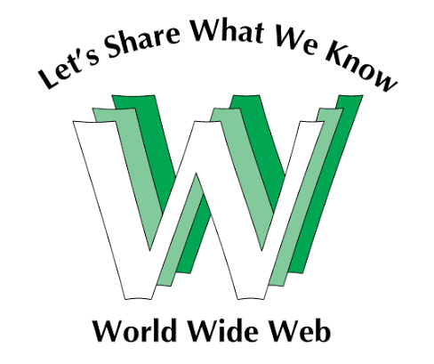
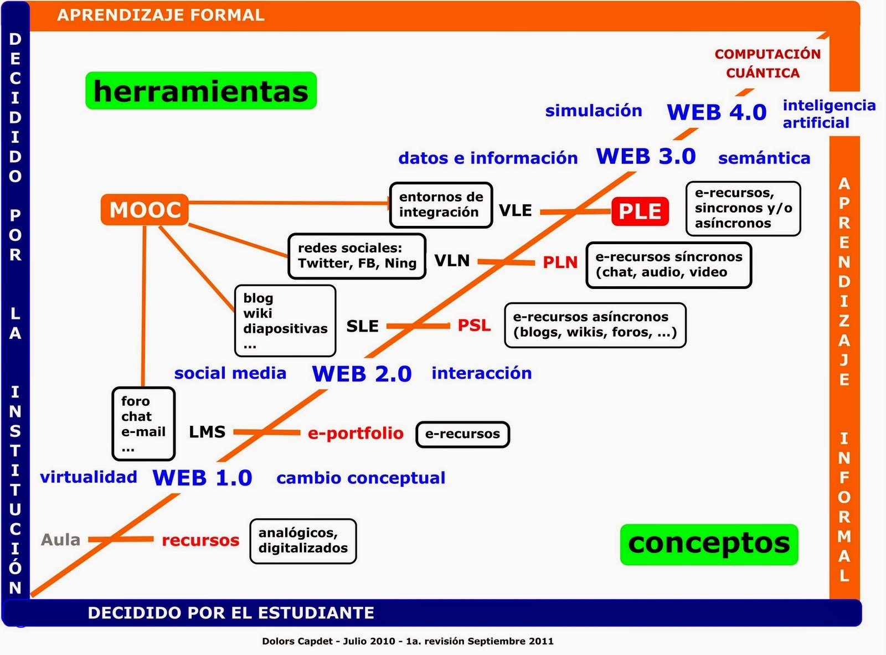

Evolución, Etapas y Fundamentos de la Web
Historia y Evolución de la Web
La World Wide Web ha experimentado cambios drásticos desde su creación. Lo que comenzó como un sistema de distribución de documentos científicos mediante hipertexto, hoy es una plataforma robusta donde corren aplicaciones complejas.

Para entender mejor este progreso, he preparado un recurso visual. Revisa el siguiente enlace para conocer los hitos más relevantes.
Línea del tiempo gráfica: Ver los 10 momentos clave de la Web en Canva
Clasificación de las Etapas Web
El desarrollo de internet suele dividirse en secuencias históricas muy marcadas:

- Web 1.0: La era de los documentos estáticos. Solo el webmaster creaba contenido.
- Web 2.0: La era social. Los usuarios comenzaron a interactuar y generar su propio contenido.
- Web 3.0: La web semántica y descentralizada, enfocada en el procesamiento de datos por IA.
Conceptos Fundamentales: Evolución por Generaciones
Características de la Web 1.0 (La Web Estática)

La primera generación de la web se caracterizó por ser unidireccional y de solo lectura:
- Páginas estáticas construidas únicamente con HTML básico.
- El contenido era creado exclusivamente por los webmasters.
- Los usuarios eran consumidores pasivos sin posibilidad de interactuar o comentar.
- Uso de hipervínculos simples para enlazar documentos científicos y textos.
Características de la Web 2.0 (La Web Social)

A diferencia de la Web 1.0, esta etapa introdujo cambios radicales en la interacción de los usuarios:
- Generación de contenido por parte del usuario (Blogs, Wikis y foros).
- Auge de las redes sociales y plataformas de video colaborativas.
- Transición hacia tecnologías web dinámicas y asíncronas (AJAX).
- Fomento de la inteligencia colectiva y el etiquetado social (Folksonomía).
Características de la Web 3.0 (La Web Semántica)

La tercera generación busca una web más inteligente, descentralizada y procesable por máquinas:
- Uso de Inteligencia Artificial para ofrecer resultados y experiencias personalizadas.
- Implementación de metadatos semánticos para que las máquinas comprendan el contexto de la información.
- Descentralización de datos y arquitecturas basadas en Blockchain.
- Interconexión de múltiples dispositivos más allá del ordenador tradicional (Internet de las Cosas).
Glosario de Términos Web
- Navegador Web
- Software utilizado para acceder, interpretar y visualizar las páginas web.
- Hipervínculo
- Referencia en un documento digital que permite saltar a otra sección o recurso externo.
- URL (Localizador Uniforme de Recursos)
- Dirección específica que se asigna a cada uno de los recursos disponibles en la red.
- HTTP / HTTPS
- Protocolo de transferencia de hipertexto, es la base de la comunicación de datos en la World Wide Web.
- Servidor Web
- Ordenador o software que almacena, procesa y distribuye el contenido de los sitios web a los usuarios.
- Dirección IP
- Identificador numérico único que se asigna a cada dispositivo conectado a una red.
- Dominio
- Nombre fácil de recordar (ej. uady.mx) asociado a una dirección IP física en internet.
- W3C (World Wide Web Consortium)
- Comunidad internacional que desarrolla estándares abiertos para garantizar el crecimiento a largo plazo de la Web.
- Web Semántica
- Extensión de la Web que permite a los datos ser compartidos y reutilizados entre aplicaciones, empresas y comunidades.
- Computación en la Nube (Cloud Computing)
- Disponibilidad bajo demanda de recursos del sistema informático, especialmente almacenamiento de datos y capacidad de cómputo, sin gestión activa directa por parte del usuario.